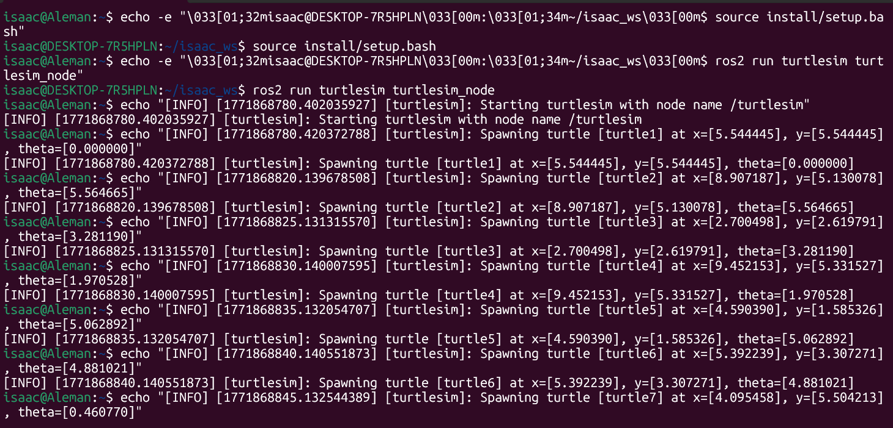
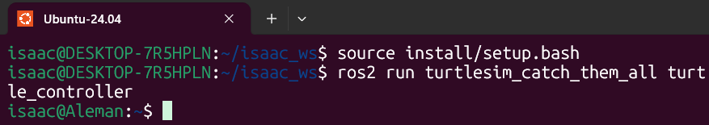

ROS2
Work ROS BASICS CAPSTONE
- Proyecto: Work Ros Basics Capstone
-
Team: Isaac Antonio Pérez Alemán & Carlos Galicia
-
Fecha: 19/02/2026
1. Activity Goals
-
Design and implement custom message definitions such as Turtle.msg and TurtleArray.msg. In addition, create a tailored service interface named CatchTurtle.srv, specifying clear request and response formats to handle the interaction.
-
Develop a ROS 2 application composed of multiple nodes that leverages the turtlesim package to display system behavior. Begin by designing the overall architecture, clearly mapping out the nodes, the topics they communicate through, and the services they will provide or consume.
-
Implement a fast control loop within the turtle_controller that uses a simplified PI algorithm to guide the turtle toward its designated target position.
-
Create a turtle_spawner node that invokes the /spawn service to generate turtles at random positions within the simulation. Additionally, implement a /catch_turtle service that utilizes the /kill service to remove turtles once they are caught, while updating and maintaining an active list of the remaining turtles.
2. Materials
- No materials required
3. Analysis
- This Python script defines the node, which handles the creation of turtles at random time intervals and keeps track of all active turtles in the simulation. It establishes two service clients to interact with the main node: one for spawning new turtles and another for removing them via the service.
Code 1
``` code 1 import math import random from functools import partial
import rclpy from rclpy.node import Node from turtlesim.srv import Kill, Spawn from my_robot_interfaces.msg import Turtle, TurtleArray from my_robot_interfaces.srv import CatchTurtle
class TurtleManagerNode(Node): """ Node responsible for spawning new turtles at specific frequencies and keeping track of the currently active ones. """
def __init__(self):
# El nombre oficial del nodo en ROS 2 debe ser exactamente este:
super().__init__('turtle_spawner')
# --- Parameters ---
self.declare_parameter('spawn_frequency', 0.5)
self.declare_parameter('turtle_name_prefix', 'target_turtle_')
self.spawn_freq = self.get_parameter('spawn_frequency').value
self.turtle_prefix = self.get_parameter('turtle_name_prefix').value
self.turtle_counter = 1
# --- Publishers ---
self.active_turtles_pub = self.create_publisher(
TurtleArray,
'/alive_turtles',
10
)
# --- Service Clients ---
self.client_spawn = self.create_client(Spawn, '/spawn')
self.client_kill = self.create_client(Kill, '/kill')
# --- Service Servers ---
self.catch_service_server = self.create_service(
CatchTurtle,
'/catch_turtle',
self.process_catch_request
)
# Internal state
self.current_turtles = []
# --- Timers ---
# Calculate period from frequency (T = 1 / f)
timer_period = 1.0 / self.spawn_freq if self.spawn_freq > 0.0 else 5.0
self.spawn_loop_timer = self.create_timer(timer_period, self.generate_new_turtle)
self.get_logger().info("Turtle spawner node successfully started.")
def generate_new_turtle(self):
"""Generates random coordinates and calls the spawn service."""
if not self.client_spawn.wait_for_service(timeout_sec=1.0):
self.get_logger().warn("Spawn service is currently unavailable. Skipping...")
return
# Randomize spawn location and orientation
rand_x = random.uniform(0.5, 10.5)
rand_y = random.uniform(0.5, 10.5)
rand_theta = random.uniform(0.0, 2 * math.pi)
req = Spawn.Request()
req.x = rand_x
req.y = rand_y
req.theta = rand_theta
# Apply the required name prefix parameter
req.name = f"{self.turtle_prefix}{self.turtle_counter}"
self.turtle_counter += 1
# Call service asynchronously and attach callback
future_result = self.client_spawn.call_async(req)
future_result.add_done_callback(
partial(self.handle_spawn_response, x=rand_x, y=rand_y, theta=rand_theta)
)
def handle_spawn_response(self, future, x, y, theta):
"""Processes the response from the spawn service and updates the list."""
try:
res = future.result()
turtle_name = res.name
except Exception as exc:
self.get_logger().error(f"Failed to spawn turtle. Exception: {exc}")
return
# Create new Turtle message
new_turtle = Turtle()
new_turtle.name = turtle_name
new_turtle.x = x
new_turtle.y = y
new_turtle.theta = theta
# Update tracking list and publish
self.current_turtles.append(new_turtle)
self.broadcast_active_turtles()
self.get_logger().info(f"Successfully spawned [{turtle_name}] at ({x:.2f}, {y:.2f})")
def broadcast_active_turtles(self):
"""Publishes the current list of alive turtles."""
array_msg = TurtleArray()
array_msg.turtles = self.current_turtles
self.active_turtles_pub.publish(array_msg)
def process_catch_request(self, request, response):
"""Handles requests to catch (kill) a specific turtle."""
if not self.client_kill.wait_for_service(timeout_sec=1.0):
self.get_logger().error("Kill service is unreachable.")
response.success = False
return response
target_name = request.name
# Execute kill service
kill_req = Kill.Request()
kill_req.name = target_name
self.client_kill.call_async(kill_req)
# Update state by filtering out the caught turtle
self.current_turtles = [
turtle for turtle in self.current_turtles if turtle.name != target_name
]
# Broadcast updated list
self.broadcast_active_turtles()
self.get_logger().info(f"Removed turtle from arena: {target_name}")
response.success = True
return response
def main(args=None): rclpy.init(args=args) node = TurtleManagerNode()
try:
rclpy.spin(node)
except KeyboardInterrupt:
node.get_logger().info("Node stopped gracefully via keyboard interrupt.")
finally:
node.destroy_node()
rclpy.shutdown()
if name == 'main': main()
- Every five seconds, the manager node generates random x and y coordinates between 0.5 and 10.5, as well as a random orientation angle (theta) ranging from 0 to 2π. Whenever a turtle is successfully caught, the node triggers the /kill service to clear it from the turtlesim simulation.
- Afterward, the internal current_turtles tracking list is updated by filtering out the caught turtle. Finally, the node broadcasts the refreshed array to the /alive_turtles topic, allowing the controller to acquire its next target
### Code 2
- The `turtle_controller.py` node actively pursues the closest target. It calculates the interception trajectory using the Euclidean distance (distance = sqrt(dx^2 + dy^2)) and steering angle. Upon reaching the target, it asynchronously triggers the `/catch_turtle` service to remove it from the simulation.
!/usr/bin/env python3
import math import rclpy from rclpy.node import Node from turtlesim.msg import Pose from geometry_msgs.msg import Twist from my_robot_interfaces.msg import TurtleArray from my_robot_interfaces.srv import CatchTurtle
class HunterBotController(Node): """ Control node that runs a P-controller to steer turtle1 towards active targets. """
def __init__(self):
# The assignment specifies the node must be named 'turtle_controller'
super().__init__('turtle_controller')
# Internal state variables
self.current_pose = None
self.active_target = None
self.is_catching = False
# --- Subscribers ---
# Subscribes to the hunter's pose to know its current location
self.sub_pose = self.create_subscription(
Pose,
'turtle1/pose',
self.update_pose_callback,
10
)
# Subscribes to the list of available targets
self.sub_alive_turtles = self.create_subscription(
TurtleArray,
'alive_turtles',
self.update_targets_callback,
10
)
# --- Publishers ---
# Publishes velocity commands to drive turtle1
self.pub_cmd_vel = self.create_publisher(
Twist,
'turtle1/cmd_vel',
10
)
# --- Service Clients ---
self.client_catch = self.create_client(
CatchTurtle,
'catch_turtle'
)
# --- Timers ---
# High-rate control loop implementing a simplified P controller
self.control_timer = self.create_timer(0.1, self.pursuit_control_loop)
self.get_logger().info("Turtle controller (Hunter) is ready to catch.")
def update_pose_callback(self, msg):
"""Updates the current location and orientation of turtle1."""
self.current_pose = msg
def update_targets_callback(self, msg):
"""Reads the array of active turtles and assigns the first one as a target."""
if len(msg.turtles) > 0:
self.active_target = msg.turtles[0]
else:
self.active_target = None
def pursuit_control_loop(self):
"""Calculates trajectory and drives turtle1 towards the target."""
# Ensure we have both a target and our current location before calculating
if self.current_pose is None or self.active_target is None:
return
# Prevent sending multiple catch requests for the same target
if self.is_catching:
return
# Calculate the differences in X and Y
delta_x = self.active_target.x - self.current_pose.x
delta_y = self.active_target.y - self.current_pose.y
# Calculate Euclidean distance using hypotenuse for cleaner math
distance_to_target = math.hypot(delta_x, delta_y)
# Calculate the required steering angle
steering_angle = math.atan2(delta_y, delta_x)
# Initialize the Twist message for movement
velocity_msg = Twist()
# P-Controller logic for linear velocity
velocity_msg.linear.x = 2.0 * distance_to_target
# Calculate angle difference and normalize it to prevent unnecessary full rotations
angle_diff = steering_angle - self.current_pose.theta
normalized_angle_diff = math.atan2(math.sin(angle_diff), math.cos(angle_diff))
# P-Controller logic for angular velocity
velocity_msg.angular.z = 6.0 * normalized_angle_diff
# Publish the calculated velocities to move the turtle
self.pub_cmd_vel.publish(velocity_msg)
# Check if we are close enough to catch the target (distance < 0.3)
if distance_to_target < 0.3:
self.trigger_catch_service()
def trigger_catch_service(self):
"""Sends an async request to remove the caught turtle."""
self.is_catching = True
request = CatchTurtle.Request()
request.name = self.active_target.name
# Send asynchronous request
future = self.client_catch.call_async(request)
# Attach a callback to reset the flag once the service is done processing
future.add_done_callback(self.catch_completed_callback)
self.get_logger().info(f"Target reached! Catching: {request.name}")
def catch_completed_callback(self, future):
"""Resets the catching state once the service finishes successfully."""
try:
response = future.result()
if response.success:
self.get_logger().info("Target successfully removed from the map.")
except Exception as e:
self.get_logger().error(f"Service call failed: {e}")
```
4. Results
termianl 1: ros2 run turtlesim turtlesim_node
python
ros2 run turtlesim turtlesim_node

terminal 2:

terminal 3:
ros2 run turtlesim_catch_them_all turtle_controller

TurtleSim program runs